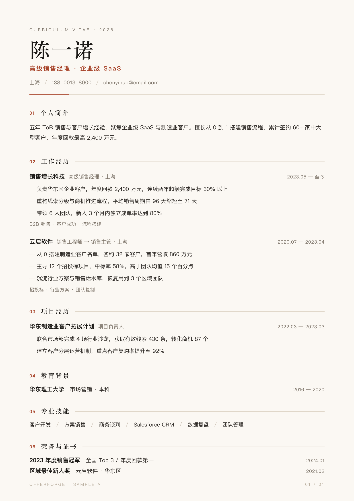
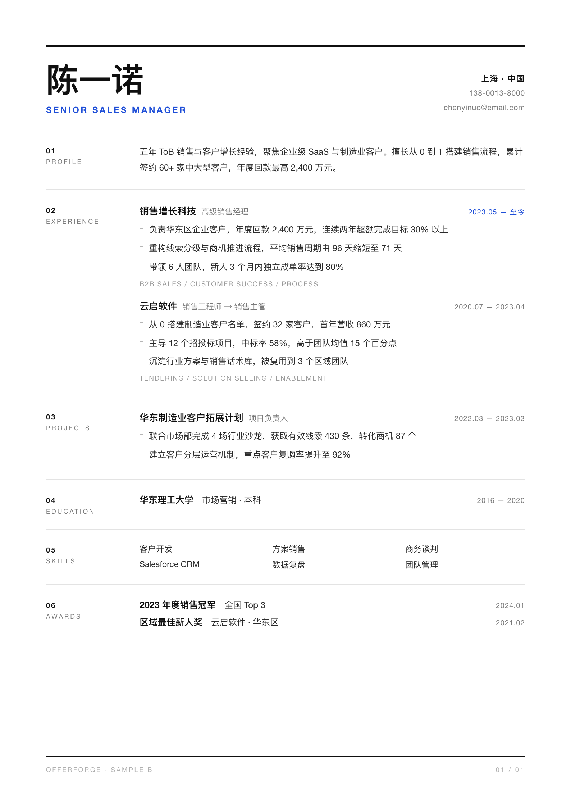
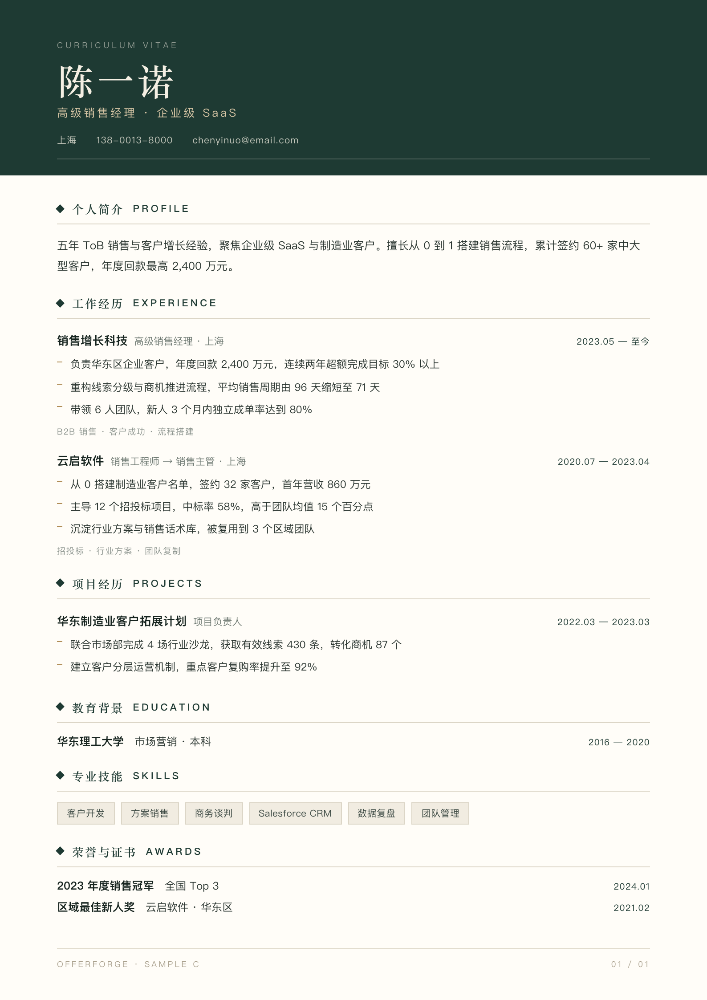

A4 794 × 1123px · 系统字体 · 可直接打印

A · 暖纸衬线 EDITORIAL
暖白纸 + 宋体标题 + 陶土红单点强调，编号章节、细线分隔，像一本排得很好的杂志。
适合 品牌 / 市场 / 内容类岗位，强调品味与叙事。注意 宋体在小字号下略细，屏幕阅读需控制对比度。

B · 冷灰极简 SWISS
纯白底、左侧栏目标签、瑞士网格式对齐，唯一彩色是那行职位与“至今”。
适合 技术 / 产品 / 咨询 / 外企，最“无风险”的通用款。注意 视觉个性最弱，容易被记成“又一份黑白简历”。

C · 深墨绿 BUSINESS
深墨绿头图承载姓名与联系方式，正文留白，菱形符号做章节锚点，稳重且有识别度。
适合 销售 / 管理 / 金融 / 实业，想要“可信赖感”。注意 满版深色较费墨，投递 ATS 时建议保留纯文本版。